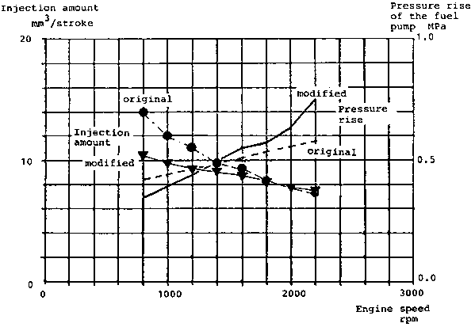
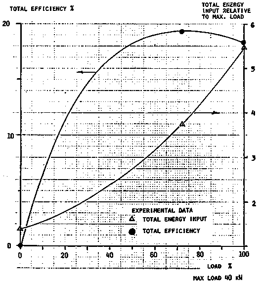
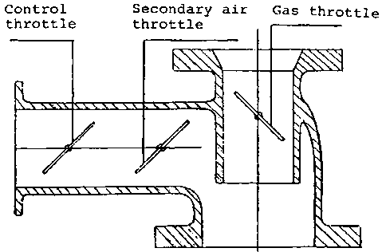
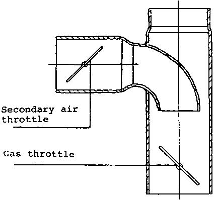

3.2.1 The need for continued practical tests
3.2.2 Conversion and operation of a Massey Ferguson 1100 farm tractor
3.2.3 Conversion and operation of a Scania truck
3.2.4 Experiences related to service, maintenance and equipment failures
Producer gas was used as a substitute fuel for almost all the vehicles operated in Sweden during the Second World War. Some improvements of the gasifier and the gas cleaning technology have been made since then. This does not necessarily mean that producer gas is still a realistic option for substitution of petroleum fuels in case of a supply crisis. The current engines are different from those used in the forties and so are the vehicles. For an assessment of the present possibilities of producer gas, it is therefore important to collect and evaluate experiences from operation of modern vehicles with this fuel. Tables 3.10 and 3.11 list tractors and trucks converted to producer gas in Sweden after the Second World War. The majority have been converted and tested by the National Swedish Testing Institute for Agricultural Machinery, and have been used for practical operation for several years, monitored by the Institute. These tests have been concentrated on dual fuelling of compression-ignition engines. The operating experience now covers more than 65000 km for trucks and 15000 hours for tractors.
Table 3.9 Results of scoping tests with various biomass fuels in the standard gasifier for wood chips
|
Fuel tested |
Testing vehicle |
Experiences |
Conclusions |
|
Peat | |||
|
Pellets of wet carbonized peat |
Scania L80 Gasifier F500 |
Distance covered 224 km. Large pressure drop in gasifier. Slagging at air nozzles, tar clogging of fabric filter. |
Tar problem might be eliminated by other choice of nozzles and choke plate. |
|
Sod peat |
Scania L80 Gasifier F500 (wood block configuration) |
Distance covered 735 km. Slagging. Clogging of perforated fuel casing and condensate jacket. Fabric filter needs more frequent cleaning than with wood chips. |
If frequent cleaning of gasifier an-d filters acceptable, the fuel may be used. |
|
Milled peat |
Scania L80 Gasifier F500 |
Gas hardly combustible. Large pressure loss after a few km. Engine very weak. |
This fuel is not possible to use in present gasifier. |
|
Agricultural residues | |||
|
Rape straw pellets |
Scania L80 Gasifier F500 |
Distance covered 445 km. (8.5 h). Large slag-cake formed. |
If frequent cleaning of gasifier is acceptable, the fuel may be used. |
|
Wheat straw cubes |
Tractor: Bolinder-Munktell, BM650 Gasifier F300 (Original configuration). |
4.5 h of operation. Bridging and severe slagging. Power output 66-82% of that for wood chips. |
This fuel is not suitable for the present gasifier. |
|
|
Tractor: Bolinder-Munktell, BM650 Gasifier F300 (wood block configuration). |
4 h of operation. Some bridging and severe slagging. Power output 78-90% of that for wood chips. |
|
|
Sugar cane, pressed and cut |
Tractor: Bolinder-Munktell BM650 Gasifier F300 |
3 h of operation. Bridging caused irregular gas production. Some slagging. Power output 97% of that for wood chips. |
The fuel is not suitable in this form for the present gasifier. |
|
Coconut shell crushed |
Tractor: Bolinder-Munktell BM650 Gasifier F300 |
7 h of operation. Excellent performance. Power output 103% of that for wood chips. |
Good fuel for the present gasifier. |
|
Coconut husk, cut |
Tractor: Bolinder-Munktell BM650 Gasifier F300 (wood block configuration). |
2.5 h of operation. No bridging, but some slagging observed. Power output 102% of that for wood chips. |
Test too short for conclusion. Absence of bridging is promising. Slagging indications shows that more frequent cleaning of gasifier may required. |
Table 3.10 Tractors converted to producer gas operation in Sweden after the Second World War
Table 3.11 Trucks converted to producer gas operation in Sweden after the Second World War
In addition, the Institute has converted and operated one passenger car, an Opel Rekord 1700, which has been driven for more than 47000 km with a wood chip gasifier. The Swedish car manufacturer Volvo has converted and operated three passenger cars, one Volvo 142 and two Volvo 144, with engine types B20.
Recent conversions of trucks have been made by the Beijer Institute for field tests in developing countries and by a private company.
The most comprehensive operating record for modern tractors and trucks has been collected within the programme conducted by the National Swedish Testing Institute for Agricultural Machinery. It's experiences with two of these vehicles, a truck and a farm tractor are presented below.
Field tests with each particular vehicle model and for all operating conditions are obviously necessary for a complete assessment of producer gas as a vehicle fuel. The experiences described can serve only to provide some guidance as far as the technical performance, service and maintenance requirements and equipment lifetime are concerned.
The experiences are not related to the most recent models of vehicles and are not necessarily transferable to the operating conditions of other countries. The field tests in developing countries planned by the Swedish International Development Authority and other international development assistance organizations will provide valuable complementary information.
a) General description of the converted tractor
The experiences from the conversion of this tractor have been reported (in Swedish) by Axelsson (1).
Table 3.12 gives the main data for the converted tractor. The gasifier system is shown in Fig. 3.8, and a picture of the converted tractor in Fig. 3.9.
Figure 3.8 Schematic of the gasifier system used for a Massey Ferguson farm tractor
Figure 3.9 Picture of a Massey Ferguson 1100 farm tractor converted to wood gas operation
Table 3.12 Specification of Massey Ferguson tractor converted to producer gas
|
Tractor | ||
|
Model and number |
Massey Ferguson 110 nr 915 12763 | |
|
Total weight in producer gas version |
5090 kg | |
|
Engine | ||
|
Type and number |
Perkins diesel engine, direct injection nr VA 5143 | |
|
Cylinder volume |
5.8 dm³ | |
|
No. of cylinders |
6 | |
|
Compression ratio |
16:1 | |
|
Injection pump: |
Distributor type with a centrifugal regulator CAV type DPA 326 2948 | |
|
Injectors |
CAV type BDLL 150 S 6472 | |
|
Gasifier system | ||
|
Gasifier |
Type F3 5/80-150 | |
|
|
Fuel bunker volume |
0.2 m³ |
|
|
Throat diameter |
120 mm |
|
|
Nozzle diameter |
12 mm |
|
Gas filter |
Industrifilter AB | |
|
|
Filter area |
4.9 m² 1) |
|
Gas cooler |
Type D | |
|
|
Cooler area |
5.8 m² |
|
Total weight |
450 kg | |
1/ Originally 2.5 m². This required cleaning every 20 hours which was not considered acceptable.
The gasifier and the gas filter are mounted on consoles bolted to the body on the left side of the tractor. The free height of the gasifier above ground is 500 mm. The gas cooler is mounted on consoles in front of the engine cooler.
Only minor changes to the original tractor were necessary. The headlights were moved to the top of the roof, since the left light would otherwise have been obstructed by the gasifier. The air filter has been turned so that the insert can be removed from the right hand side of the tractor since the gas filter box on the left side of the tractor would prevent servicing of the air filter in its original position. A new opening has been made in the engine hood for the air inlet pipe to the air filter. The loose weights and their brackets on the front of the tractor have been removed, to make space for the gas cooler. The engine has been fitted with an extra speed governor, acting on the gas throttle in the gas/air mixer. The governor is driven by a V-belt from an extra pulley mounted on the fan shaft. The diesel injection system required the most substantial changes. The injection pump was of the distributor type with a centrifugal regulator. The original injection system gave injection at reduced engine speeds exceeding the amounts which are required for dual fuelling. The result of this is that the injection will be unnecessarily large at low speeds.
A constant injection amount was obtained by mounting an adjustment device for the fuel pressure normally used on pumps with an hydraulic speed governor. Fig. 3.10 shows the injection characteristics of the original and modified systems.
Overheating of the pump was avoided by leading the excess flow to the fuel tank as described in section 3.1.4. A radiation shield was also mounted to protect the pump and the fuel filter from being heated by the hot gasifier which is mounted on the same side as the pump. 1/ The injection pump was fitted with an adjustable stop for the engine stop-lever, close to the zero injection position. With the lever at this stop the injection flow is less than required for idling, which means that the engine can be stopped just by closing the gas throttle even though the diesel flow cannot be shut off completely. The stop lever can also be adjusted by the driver to a full diesel position, enabling starting and driving on diesel oil, if required.
1/ These changes were not done originally. After 25 hours of operation the pump seized, and this was attributed to insufficient cooling and lubrication. After the changes described here, the pump operated satisfactorily
Figure 3.10 Injection characteristics of the original and modified fuel injection system for the Massey Ferguson 1100 farm tractor

The mounting of the injectors was also modified, since it turned out after a few hours of operation with the original design that the injectors were running hot and suffering from coke deposits in the nozzle holes. This was caused by a combination of the low injection flow in dual fuel mode, and the way the injectors were mounted in the cylinder head. The engine is equipped with a cylinder head covering all six cylinders. The holes for the injectors are made in the cast material. This leads to poor cooling of the injectors, partly because of the low thermal conductivity of the cast iron, partly because the wall thickness is large.
To improve the cooling of the injector a copper sleeve was mounted on the injector and by opening a connection between the space where the injectors are placed and the cooling water channels in the cylinder head. This change was fairly simple to make. After this modification, it was necessary to drain the cooling water from the engine before removal of the injectors.
The total height of the gasifier above ground is 222 cm. The eye level of the driver is 225 - 240 cm, depending on how the seat is adjusted. The field of vision in the forward left direction is partly obstructed by the gasifier and the filter box. To the right and backwards, the field of vision is not affected.
b) Laboratory performance tests
Laboratory tests were carried out to establish the performance of the gasifier system and the converted engine.
A summary of the test results is given in Table 3.13 and Fig. 3.11. The maximum power in dual fuel mode was found to be 51 kW at about 2170 rpm (injection timing 30° before TDC). This is 79% of the maximum power for straight diesel operation at recommended injection timing (22° before TDC) and 76% of the diesel power at the same injection timing as for dual fuelling. As can be seen in Table 3.13, the diesel oil substitution was found to be 80-85% and the efficiency of the gasifier system about 70%. Solid residue in the ash pit was found to be up to 3.5% of the fuel consumption. This would account for a loss of about 5% at full power.
Tests were also made with injectors other than the original four hole type. Pintle type injectors in the original cylinder head showed no tendency for coking - the injectors are self cleaning - but the maximum power in dual fuel operation was 19 percent lower than for the four hole type. Straight diesel operation with this injector was not considered possible, since very smoky exhaust gases were already obtained at low powers. Two-hole injectors gave the same power output in dual fuel mode as the four-hole injectors for engine speeds up to 1900 rpm and slightly less above. For straight diesel operation, the power output was generally lower than for four-hold injectors over the whole speed range.
Figure 3.11 Total efficiency at part loads for a F-5/80-150 gasifier system mounted on a Massey Ferguson tractor.

Table 3.13 Results of laboratory tests with F-5/80-150 gasifier system mounted on a Massey-Ferguson 110 tractor.
|
Fuel |
Wood chips, moisture content 8%, bulk density 152 kg/m³ | ||
|
Rating |
Max. |
Part |
Idling |
|
Engine speed (rpm) |
1855 |
1440 |
1015 |
|
Output power (kW) |
40 |
29 |
- |
|
Fuel consumption | |||
|
Wood chips (kg/h) |
41 |
27 |
8.5 |
|
Diesel oil (kg/h) |
2.2 |
1.9 |
1.2 |
|
Energy balance | |||
|
Gas heating value MJ/Nm³ |
5.60 |
5.56 |
5.54 |
|
Diesel oil fraction of fuel energy (%) |
18.9 |
15.0 |
26.2 |
|
Total efficiency |
18.0 |
5.3 |
0 |
|
Gasifier cold gas efficiency (%) |
71.1 |
66.5 |
73.1 |
|
Energy losses total (kW) |
181.5 |
143.3 |
54.8 |
|
Energy losses, gasifier (kW) |
56.3 |
43.0 |
10.1 |
|
Hearth load | |||
|
Bg (Nm3/cm² ,h) |
0.79 |
0.49 |
0.17 |
|
Tar content | |||
|
g/Nm³ |
0.13 |
0.04 |
0.17 |
c) Experiences from practical operation
The tractor was used in practical operation for more than 2500 hours during a six year period at two large farms in southern Sweden. The tractor was mainly operated by agricultural students, since the regular tractor drivers were not interested in using it. The main reason given for this is that the daily service is time consuming, dirty and heavy. Preparation for operation requires 30 - 45 minutes. Large amounts of wood chips must be loaded on the roof for the operation during a full work shift.
Education of a new driver has required one to two weeks. Each student has been responsible for the tractor during one six month period.
The tractor has been used for the following types of work:
|
- Soil treatment with |
clod crusher |
4 m wide |
|
|
peg-harrow |
5 m wide |
|
|
disc-harrow |
2 m wide |
|
|
land-packer |
6 - 10 m wide |
Transport of beets, grain and fertilizers.
The gasifier system has worked satisfactorily. Average times between cleanings of different parts of the system and other service measures as well as failures are discussed in section 3.2.4. The injectors, which were believed to be critical for reliability, have not caused any trouble. One serious engine failure was experienced. This was probably caused by water sucked by the gas from an overfull condensate vessel in the gas cooler.
a) General description of the converted truck
The experiences from conversion of this truck have been reported (in Swedish) by Axelsson (2). The gasifier system, which originally was the prototype design type F5, was later replaced by the mass production prototype design F500. This change was made in 1979 after approximately 45000 km. Table 3.14 gives the main data for the converted vehicle. The gasifier system is shown in Fig. 3.12, and a picture of the converted truck in Fig. 3.13.
The entire gasifier system including the gas cooler is mounted on a frame which is bolted to the chassis behind the driver's cabin. To make space for the gasifier installation, the platform was shortened. The distance between the cabin and the platform is now 108 cm. This reduced the platform area to about 80 percent of the original.
Figure 3.12 Schematic of gasifier system used for a Scania L8050 truck
Figure 3.13 Picture of a Scania L8050 truck converted to wood gas operation
Table 3.14 Specification of Scania truck converted to producer gas
|
Truck | |
|
Model and number |
Scania L8050 nr 365472 |
|
Total weight in producer gas version |
8350 kg |
|
Load capacity |
7600 kg |
|
Engine | |
|
Type and number |
Scania diesel engine nr 735 145 |
|
Cylinder volume |
7.8 dm³ |
|
Number of cylinders |
6 |
|
Compression ratio |
15.9:1 |
|
Injection pump |
In-line type with vacuum regulator type CAV NR6H80/338 GLPE 34 |
|
Injectors |
CAV type BDLL 150S 6403 |
|
Gasifier system | |
|
Gasifier type |
F-S/80-150 2/ |
|
Fuel bunker volume |
0.031 m³ |
|
Throat diameter |
150 mm 1/ |
|
Nozzle diameter |
12 mm 1/ |
|
Gas filter |
Industrifilter AB |
|
|
Two standard boxes in parallel |
|
|
Filter area: 6 m² |
|
Gas cooler |
Type D 2 |
|
|
Cooler area 5,8 m² |
|
Total weight |
456 kg |
1/ Tests have been done also with throat 165 mm and nozzles 14,5 mm. This gave 1% improved max. power.2/ Later replaced by type F500.
The injection pump is of the in-line type, and equipped with a vacuum regulator. The delivery valves have idling holes. No modifications to the injection pump were made. The damper for the regulator was adjusted to suppress tendencies for oscillations of the control rod.
The injection pump is set for dual fuel operation by moving the stop lever from the full feeding position to an adjustable stop close to the zero feed position. This gives a fuel flow below that required for idling.
Therefore it is possible to shut off the engine by moving the lever to this position when the engine is operated on straight diesel oil or by closing the gas throttle when the engine is operated with dual fuel. The lever can be operated from the driver's cabin using the ordinary stop control. The injectors are mounted in steel sockets in the cylinder head. The steel sockets are directly surrounded by cooling water. No modifications to avoid overheating of the injectors were made since it was assumed that this would not be necessary.
A gas/air mixer, Fig. 3.14, was connected to the inlet manifold of the engine. The gas throttle is manoeuvered by the gas pedal, the secondary air throttle by a manual control in the driver's cabin. The compartment between the two throttles in the secondary air line is connected to the vacuum chamber of the injection pump regulator. This makes it possible to use the regulator to limit the runaway speed of the engine. The air filter was moved to make space for the gas/air mixer. The crank case ventilation was changed to a closed system in order to avoid leakage of poisonous gas. The ventilation pipe, which originally opened to the atmosphere below the engine, is now connected to the hose between the air cleaner and the gas/air mixing valve.
The truck was tested using different compression ratios and injection timings in order to find the most suitable combination. The results of these tests are summarized in Table 3.15.
It was found that the best performance in dual fuel operation was obtained with a compression ratio reduced from 1:16.5 to 1:15.9 and injection at 35 before TDC. The reduced compression ratio was achieved by using one of the copper sheets from a cylinder head gasket as an extra spacer between the cylinder head and the engine block.
b) Laboratory performance tests
Laboratory performance tests were carried out to establish the performance with different compression ratios, injection timings, throat and air nozzle diameters and designs of the gas/air mixing valve.
Figure 3.14 Gas air mixers tested for the Scania L8050 truck - a. Gas-air mixer of Scania Vabis design

Figure 3.14 Gas air mixers tested for the Scania L8050 truck - b. Gas-air mixer designed by the National Testing Institute for Agricultural Machinery

Table 3.15 Experiences from tests with different compression ratios and injection timing for dual fuel operation of a Scania D8 engine
|
Compression ratio |
Measures taken to change compression ratio |
Injection timing ° before TDC |
Experiences |
|
16.5:1 |
Original engine |
30 |
Knocking |
|
|
|
25 |
No knocking, reduced power |
|
13.9:1 |
Double cylinder-head gaskets |
25 - 39 |
No knocking, but starting difficulties and reduced power |
|
|
|
|
|
|
15.9:1 |
Single gasket together with one coppersheet from another gasket |
36 |
Knocking at low engine speeds (of limited practical importance if the correct gear is used). |
|
|
|
32 |
No knocking even at low speeds but some power loss at high speeds. |
The conclusions from these tests have been summarized in the preceding section.
The maximum power for straight diesel operation was found to be 70.5 kW (at 2090 rpm) with the reduced compression ratio. After mounting the gas/air mixer and adjusting it, and adjustment of the injection timing to 35° before TDC, the power was reduced to 60.2 kW (at 1720 rpm). The maximum power output for dual fuel operation was found to be 49.8 kW (at 2230 rpm), i.e. 71 percent of the power for straight diesel operation at the reduced compression ratio.
The diesel oil injection was found to be about 15 percent of that for straight diesel operation.
c) Experiences from practical operation
The truck has been operated since March 1969, and has covered more than 91500 km in dual fuel operation, and 28000 km using straight diesel oil. It is still operational. The truck has been used for various types of transport, to teach drivers, for tests with different types of fuel and for demonstration.
Table 3.16 shows the fuel consumption as determined in practical operation for different loads. The diesel oil substitution is about 80 percent, compared to straight diesel operation of the truck in its converted version. The consumption of wood chips for substitution of 1 kg of diesel oil is about 3.6 kg, indicating a practical efficiency of the gasifier system of about 71 percent.
Training for dual fuel operation of a driver with earlier experience of driving a diesel truck requires only about five hours, three of them theoretical preparation, and about two of practical training. Such quickly trained drivers have used the truck on several occasions for round trips of several thousand kilometers without major problems. The drivers have, however, remarked that city driving - in particular in Stockholm - with dual fuel is much more inconvenient than highway driving. In the city, more planning was necessary to refuel in a suitable place. The large smoke clouds exhausted during fanning were considered a problem. Poor acceleration after stops at traffic lights was also found inconvenient.
During the practical testing, records were kept on fuel consumption, service and maintenance intervals, and equipment failures. A summary of these records is given in section 3.2.4.
Table 3.16 Fuel consumption observed in practical dual fuel or straight diesel operation of a Scania L8050 truck
|
Load |
Straight diesel operation |
Dual fuel operation 1/ |
|||
|
Diesel oil kg/10 km |
Diesel oil kg/10 km |
Wood chips 2/ kg/10 km |
Diesel oil substitution |
Gasifier system efficiency |
|
|
Empty |
2.44 |
0.50 |
7.2 |
80 |
69 |
|
5000 kg |
2.61 |
0.50 |
7.6 |
81 |
71 |
|
8000 kg |
2.87 |
0.55 |
7.8 |
81 |
76 |
1/ Average speed about 60 km/in.
2/ Wood chips 10 x 10 - 40 x 40 mm, moisture content 8 - 10%.
For an economic assessment of straight wood gas or dual fuel operation of farm tractors and other vehicles, data for extra service time, as well as costs and time required for maintenance and repair are of great importance.
Records on service and maintenance intervals as well as equipment failures have been kept for the vehicles tested by the National Swedish Testing Institute for Agricultural Machinery, see Tables 3.17 and 3.18. There are variations between different vehicles and, rather than presenting here the experiences for the two vehicles reviewed in detail, it has been preferred to present integrated experiences based on the operation of several of the vehicles. Table 3.18 shows approximate service intervals and the approximate time required for the service jobs.
Assuming that the vehicle is used eight hours per day, the service time required for the gasifier system can be estimated as 15 - 25 minutes per operating hour, including refuelling stops.
The approximate repair intervals for different critical components are given in Table 3.18, which is based on experiences from practical operation of several vehicles. These experiences are not necessarily representative of what would be found if the technology were in widespread regular use. The present experiences may be biased in a negative direction because the systems tested were to a large extent first or second generation prototypes - they were also manufactured with the cheapest materials which could reasonably be used. Commercial products in regular use could be expected to show longer lifetimes if they are maintained and operated like the prototypes.
The experiences may, however, also be biased in a positive direction because the operators of the test vehicles have been more keen and interested in the functioning of the system than the average operator might be if the technology were widely used. Most of the service and maintenance tasks are dirty. This may lead to neglect by some operators. There are also some difficulties associated with the assessment of the failure rates which could be expected for other operating situations. Some of the failures, like chafing of filter bags, and cracking of throat plates are clearly related to the number of operating hours. Others such as corrosion damage could be more dependent on the actual age of the component.
The repair costs for the prototype systems are probably not at all representative of the costs which would be experienced in practical operation. Mass produced spare parts would be much cheaper than the spare parts made specially for the prototypes.
Table 3.17 Service and maintenance intervals for vehicle gasifier systems in practical operation
|
|
Interval |
Time required |
|
Daily preparation for operation |
Every day of operation |
30 - 45 min. |
|
Fuel charging |
Every 40 - 50 min. |
Less than 5 min. |
|
Draining of condensate tank on gas cooler |
Every 2 - 3 h |
Less than 5 min. 1/ |
|
Removal of ashes from gasifier ash pit |
Every 8 - 15 h |
15 - 30 min. 2/ |
|
Draining of condensate tank on gasfier |
Every 8 - 10 h |
Less than 5 min. 2/ |
|
Cleaning of hose between primary air intake and starting fan |
Every 55 h About 1 h |
|
|
Cleaning of fabric filter |
Every 25 - 100 h 3/ |
30 - 60 min. |
|
Cleaning of condensate jacket |
Every 75 - 135 h |
1 - 2 h |
|
Replacement of various gaskets |
Every 500 h |
About 1 h |
|
Cleaning of gas cooler and inlet manifold |
Every 500 h 4/ |
1 - 2 h |
1/ Done during refuelling stop2/ Can normally be done as part of daily preparation. Time given for that includes these tasks.
3/ The cleaning interval depends on the pressure loss accepted and the size of the filter surface relative to the gasflow.
4/ Cleaning required after gas filter failures. Frequency estimate based on observed failure rates for filter bags.
Table 3.18 Lifetimes of some critical components between repair or replacement according to practical operation experiences
|
Component or part of the system |
Operating time between failures (h) |
Type of failure and repair |
Comment |
|
Gasifier |
|
|
|
|
Fuel lid and upper part of gasifier |
Above 4000 |
|
Age about six years or more |
|
Lower part including condensate jacket and ash pit. |
2000 - 4000 |
Corrosion - Patch or replace damaged part. |
The test gasifiers have used mild steel for these parts. Use of corrosion resistant alloy will increase lifetime. |
|
Fire box |
600 - 1000 |
Cracks, deformation - weld or replace. |
|
|
Throat ring |
About 700 |
Cracks, deformation - weld or replace. |
|
|
Grate and grate mechanism |
400 - 700 |
Cracks, deformation - weld or replace. |
|
|
Fabric filter |
|
|
|
|
Filter bags |
500 - 1000 |
Chafing, burn-holes - replace |
|
|
Filter box |
Above 4000 |
|
|
|
Gas cooler |
|
|
|
|
Cooling elements and condensate tank |
1500 - 2000 |
Corrosion - Patch General corrosion - replace |
|
|
Engine |
Above 4000 |
|
Inspection of the engine of the Scania truck LBS 110 after 190000 km (about 4000 h) showed slightly more cylinder wear than for straight diesel operation. |
It does not seem unreasonable to assume a lifetime of about six years for the gasifier system in general, and a repair cost of five per cent of the capital investment per 1,000 hours of operation. The repair cost is estimated on the assumption that the filter bags must be replaced every 500 - 1,000 hours, and that repairs to the parts of the system exposed to high temperature or corrosive condensates are necessary with about the same frequency.